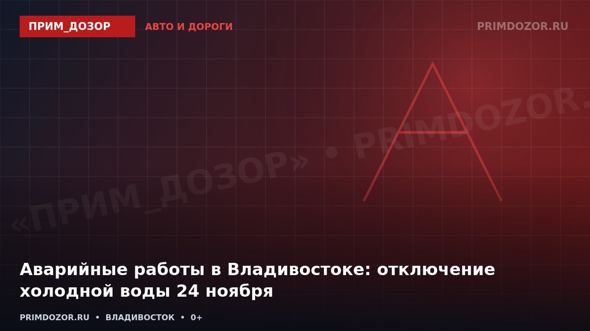
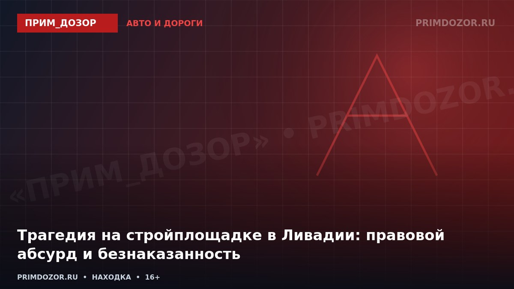
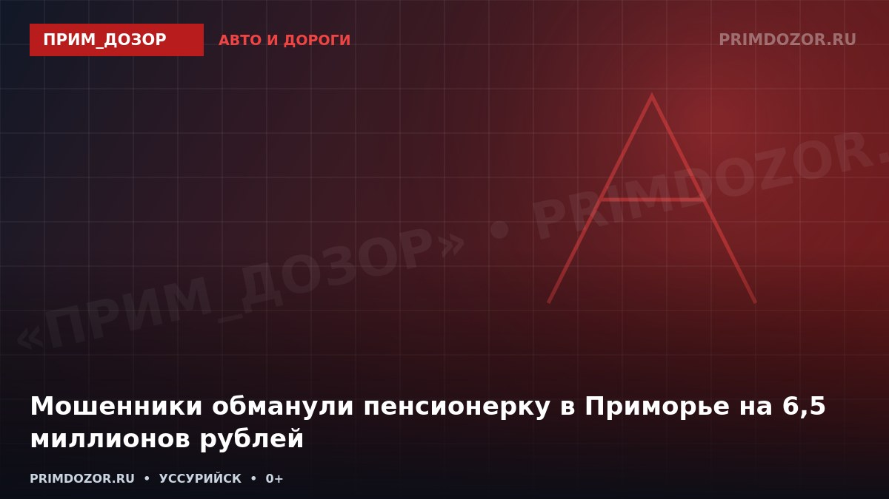
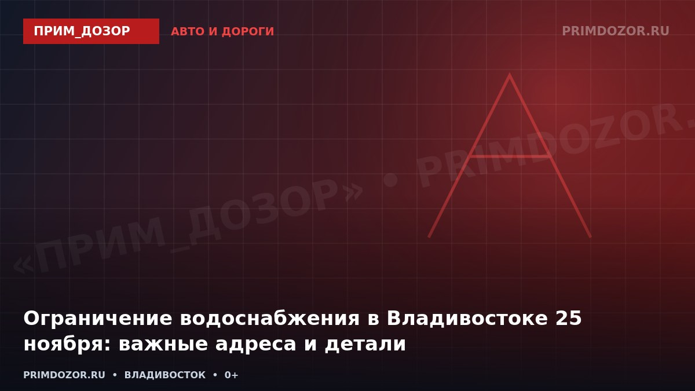
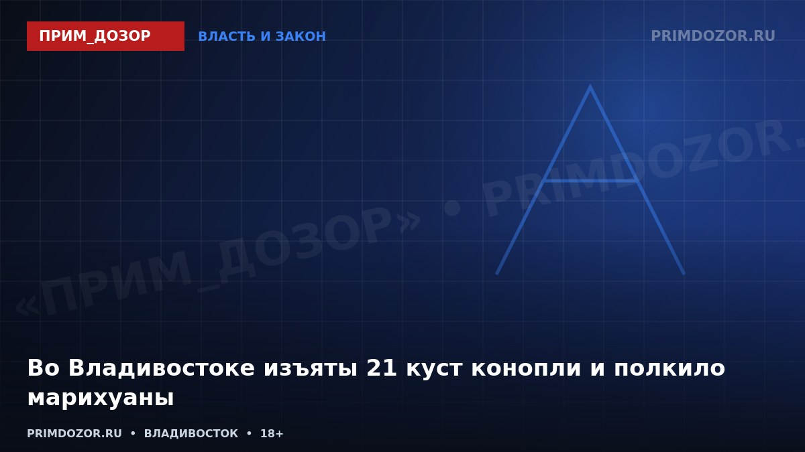
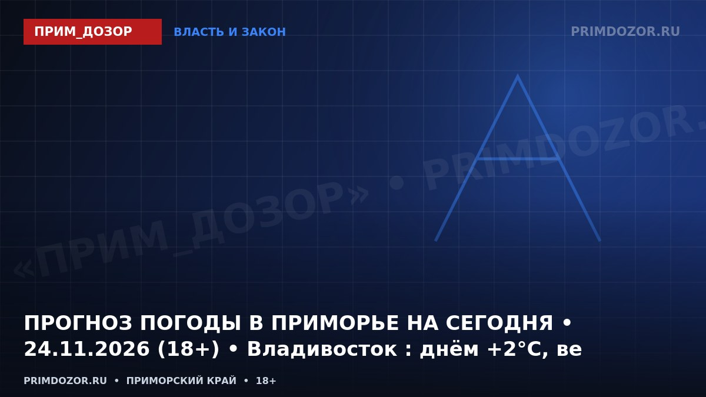
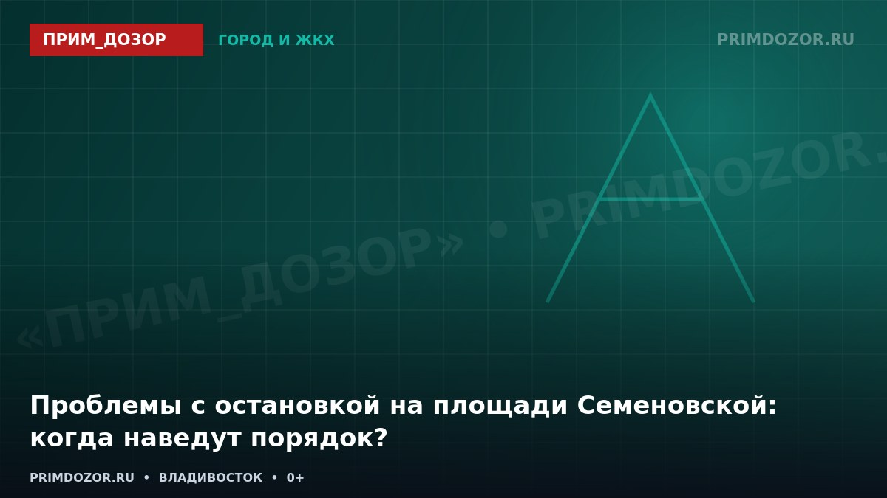

Аварийные работы в Владивостоке: отключение холодной воды 24 ноября
24 ноября 2023 года в Владивостоке будут проводиться аварийно-ремонтные работы, в связи с чем ожидается отключение холодного водоснабжения. Работы начнутся...

24 ноября 2023 года в Владивостоке будут проводиться аварийно-ремонтные работы, в связи с чем ожидается отключение холодного водоснабжения. Работы начнутся...





